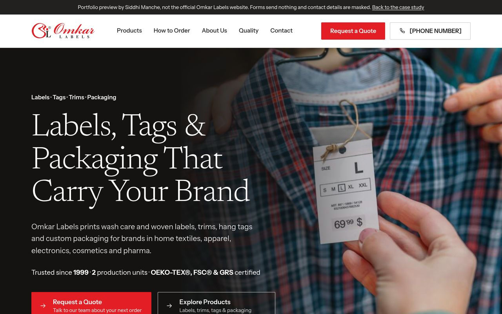
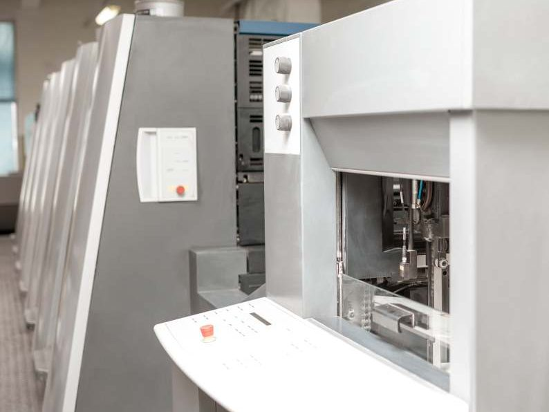
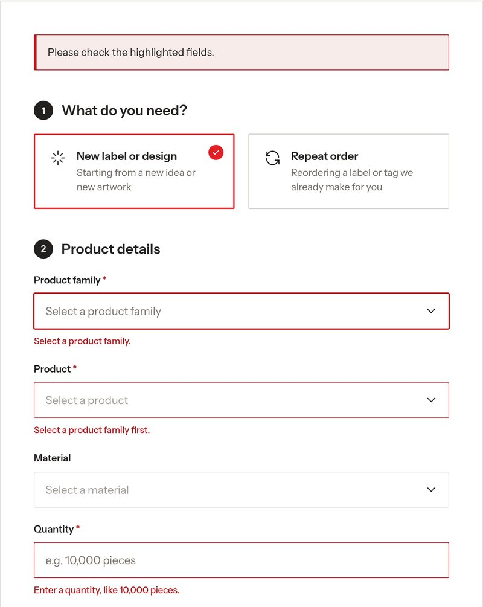

ShippedB2B catalog · Front-end development · 7 min read
A B2B catalog buyers check before they call
Omkar Labels makes clothing labels and tags for apparel brands. In 2022, as a front-end developer, I developed its website in HTML, CSS and JavaScript, turning the designer's files into responsive pages for a catalog of 50+ products. It taught me what is possible in the browser. In 2026 I rebuilt the site in Next.js; I directed and tested the build, and an AI assistant wrote much of the code.
I developed the website in code
I wrote the 2022 code myself. For the rebuild, I planned, reviewed and tested the code, and an AI coding assistant wrote much of it.
ShippedThe 2022 site. The 2026 rebuild is a preview, built with an AI assistant.
The website is the manufacturer's shop window
Omkar Labels has made clothing labels, hang tags and tapes since 1999. Buyers check the website before they pick up the phone.
- What they make: labels, trims, tags and packaging.
- Whether to trust it: two factories, in Thane and Narmadapuram, and a four-point quality check on every order.
- Proof: OEKO-TEX, FSC and Global Recycled Standard certifications.
Why it matters: a broken page or an old listing costs trust with exactly the people about to call.

Organize the site around the buyer's questions
Problem. A B2B buyer needs to confirm what Omkar makes and whether to trust it, then ask for a price, without calling first.
How might we let a buyer go from "what do you make?" to a sent quote request in a few clear steps?
- What do you make?Products, grouped into 4 families, from the label inside the collar to the box on the shelf.
- Can I trust you?About Us and Quality are one tap away in the main menu, with the factories and certifications.
- How do I order?How to Order shows the 4-step path: order intake, design, quality check, delivery.
- Request a QuoteThe one primary button in the header, so the next step is always visible.
The flow that turns a visit into a lead, step by step, as it works in the rebuild. Each ✓ is a step where the site keeps the buyer moving.
Flow · Request a quote

RebuildStep by step
- Step: Tap Request a QuoteFrom the header, on any page.
- Step: Fill in the formLabeled fields, with required ones marked.
- Decision: Decision: is everything valid?If not, the form stops in the browser and focus jumps to the first problem, with the error under its field.
- Step: SendThe server checks the same rules again.
- Step: Quote receivedA confirmation page, so the buyer knows it went through.
A typo is caught before it becomes a lost lead.
From design file to working page (2022)
As a part-time front-end developer, I developed the website's pages in code, turning the designer's files into responsive pages on the company's WordPress site.
- Layout: HTML and CSS, with Bootstrap's grid so pages held up on every screen.
- Behavior: JavaScript and jQuery.
- Content: I kept the catalog of 50+ products accurate as things changed.
- Handoff: when the design file and the browser didn't match, I raised it early and we solved it together before release.
- Debugging: when a layout broke in one browser and not another, I traced the cause in Chrome DevTools and fixed the code, not the symptom.
Why it matters: I've been the developer on the other side of a handoff, so my own handoffs now spell out states, spacing and behavior.

Six decisions, and the principle behind each
I no longer had the 2022 code, so in 2026 I rebuilt the site from the designer's Figma files in Next.js 16, React 19 and TypeScript. I planned and directed the build, reviewed the code and tested every page. An AI coding assistant wrote much of the code.
RebuildErrors under each field. Decision 1 · FormsCatch mistakes before the quote is sent
A quote request with a typo is a lost lead. The form checks every field in the browser, then again on the server. An invalid form stops before sending, and focus jumps to the first problem.
UX principles
- Error prevention. Problems are caught before the request leaves.
- Help users recognize and recover from errors. Each message sits under its own field, and editing a field clears its error.
- Decision 2 · Accessibility
Every error is tied to its field
Each message is linked to its input, so a screen reader reads the error together with the field.
UX principles
- Accessibility (WCAG 2.1 AA). The same feedback for people who can't see the red text.
- Decision 3 · Navigation
A phone menu you can always escape
On tablets and phones, the menu opens full screen. Esc closes it, the close button gets focus first, and the page behind it can't be reached by mistake.
UX principles
- User control and freedom. A clear, keyboard-friendly way out.
- Consistency and standards. Built on the browser's own dialog, so it behaves the way people expect.
- Decision 4 · Content
An FAQ that shows one answer at a time
Questions open one at a time, and work even without JavaScript, with the keyboard and screen readers handled by the browser.
UX principles
- Progressive disclosure. Buyers see the questions first, and open only the answer they need.
- Aesthetic and minimalist design. A short page instead of a wall of text.
- Decision 5 · Findability
Pages search engines can read
B2B buyers often start with a search. Every page has a title, description and canonical link, the home page adds structured business data, and 5 of 6 pages are served as plain HTML.
UX principles
- Findability. The site shows up where the buyer's journey starts.
BuiltIt's a preview, so there's no traffic to report.
- Decision 6 · Responsive
Design tokens from the Figma file
Colors, type and spacing are variables taken from the designer's file. Spacing steps down at 1100px and 768px, between the 1440px desktop and 390px phone frames.
UX principles
- Consistency and standards. One source for every color and space, so pages match the design.
- Flexibility. The same content works from phone to desktop.
Checked, not assumed
Before calling the rebuild done, I checked it at phone and desktop sizes.
- Accessibility: axe-core against WCAG 2.1 AA, on all 6 pages.
- Contrast: text over photos, checked against the worst spot behind it.
- Code quality: TypeScript in strict mode and ESLint.
Limit: automated checks find many accessibility problems, not all. Next would be testing with a screen reader user and real buyers.
- 0axe-core violations of WCAG 2.1 AA, on all 6 pages
- 7.1:1lowest contrast of any text over a photo; AA asks for 4.5:1
- 0TypeScript errors, in strict mode
- 0ESLint problems
- 5 of 6pages served as plain HTML
Why every designer should build something
- 50+product pages kept accurate
- 8 monthsas the developer on the other side of design handoffs
- 6pages rebuilt in Next.js
- 5front-end tools: HTML, CSS, JavaScript, jQuery, Bootstrap
Handoffs answer questions early
I know which questions a handoff leaves open, because I used to be the one asking them.
Speak the developer's language
I can talk through HTML and CSS with front-end developers on their terms.
What I'd do differently now
Ideas for a next version, not built yet.
A quote assistant
A buyer types "500 woven labels, two colors" and AI drafts the quote form for them to confirm.
Search in plain words
Find the right label by describing it, without knowing the product name.
Did you like this case study?
Tell me what worked, or what you'd change. It comes straight to me.